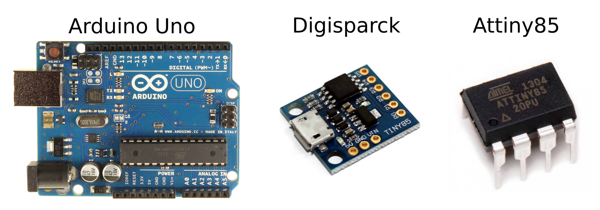

Making with Arduino and Digispark
2017-2-21about me cv research blog
I bought my Arduino about 6 years ago by being impressed how easally it is to make blinking lights and read value from potentiometer and that was all for very long time. I lost my curiosity of making anythinkg more complex due to the ugly arduino ide, frustrations of dubugging and lack of easy options for deploying what you make keeping opportunties to load new software and keeping things as simple as possible. Now Digisparck is available which uses single Atiny85 giving siz output pins and is programmable from usb also after you have deployed and soldered it into your applicaction and my curiosity had rised…
Arduino and Digisparck
Arduino is now the easiest wya to start out with digital electornics with good ide, libraries and comunity. When it first came out about 6 or 7 years ago I remeber buying my first mega board for about 50 eiros (converting from 38 Ls) now it is available very cheaply on ebay (for example Arduino Uno board costs about 5 eiros). Arduino however is very often overkill for my small projects and I feel bad when I am not utilising thighs with their boundaries. Thus when I heard about Digisparck my curiosity returned.

Digisparck is basically an Attiny85 (about 1.15 eiros) with easy programmable interface over USB and voltage regulator on single chip. It has 6 output/input pins with whichs you can attach I2C devices (with SDA un SCK pins), analog input devices for controlling relays. The port mapping for digisparck is as foolows (again to forget)
| Digital | Analog | Other | |---------+--------+-------| | P0 | - | SDA | | P1 | - | - | | P2 | A1 | SCK | | P3 | A2 | - | | P4 | A3 | - | | P5 | A0 | Reset |
Also it can count time but with precission of 5 minutes in 24 hours with its 8-bit clock and you can make logic in its 8 kb internal memory with 512 bytes of RAM. It is so cheap (about 1.30 eiros) and convienietly small that I have no worries of making my deployable applicaction small and practical looking.
But with such simplicity gain also comes sacrifices. Due to small memory and RAM some arduino libraries does not fit in theese requirements. Fortunatelly for many of them analog versions of libraries for attiny85 exists developed by makers of Digisparck allowing to use many arduino programms by making simple replacements in headers. The biggest limitation with digisparck is not being able to debugg your code easally as there is no serial monitor as arduino does. The situation might look even as desperate as the code
void Blink(byte led, byte times){ // poor man's GUI
for (byte i=0; i< times; i++){
digitalWrite(led,HIGH);
delay (400);
digitalWrite(led,LOW);
delay (175);
}
}
Fortunnatelly solutions like emulating Serial port or arduino USB device are available which I will show here. Linitations like theese are the ones I like push creativly and you will find something in Debugging section.
Makefile
Arduino
While usual arduino ide is good for seing out whats possible with arduino it is frustrating for not typing programms in your own way. Fortunatelly many had felt the same way thus makefile for arduino is made by comuity. Very good introduction on how to use it can be found in a hackaday blog post. Here I will outline how do I use it with system which had been configured with
sudo apt-get install python-serial arduino-mk
Before I can compile code I need to set up project directory. In it I have Tools directory where I store some custom code uploaders and Arduino makefile thus making my projects less dependable on system which I am using and subproject directories. In thoose I have libs folder simple makefile and arduino sketch file .ino. An cleaned up tree from my projects directory basically looks as follows
├── Tools │ ├── Arduino.mk │ ├── micronucleus-t85 │ │ ├── commandline │ │ │ ├── Makefile │ │ │ ├── micronucleus │ │ │ ├── micronucleus.c ├── Blink │ ├── ATtinyBlink.ino │ ├── build-attiny │ ├── build-mega │ ├── Makefile ├── DebugShield │ ├── build-mega │ ├── DebugShield.ino │ ├── libs │ │ └── SoftwareSerial │ └── Makefile ├── DebuggingCDC │ ├── build-attiny │ ├── libs │ │ └── DigisparkCDC │ ├── Makefile │ ├── Print.ino │ └── readme.org ├── SmartRheostat │ ├── build-attiny │ ├── libs │ │ └── SendOnlySoftwareSerial │ │ ├── keywords.txt │ │ ├── SendOnlySoftwareSerial.cpp │ │ └── SendOnlySoftwareSerial.h │ ├── Makefile │ └── SmartRheostat.ino
The full power could be demonstrated of my DebugShield project which depends on SoftwareSerial library (where Arduino versions can be found in /usr/share/arduino/libraries with examples in /usr/share/arduino/examples) thus my makefile for this project is
BOARD_TAG = mega USER_LIB_PATH+=./libs ARDUINO_LIBS += SoftwareSerial include ../Tools/Arduino.mk
which allows to compile and upload with single command sudo make upload and afterwards allows to see serial output in terminal with make monitor in screen environment (to exit it Ctrl-a k).
Digisparck
Microcontrollers (as attiny85) are usually programmed with ISP programmers which requires to take microcontroller out and put it on programmer. Thus limitting options to adjust your deployed applicaction. There are two simplicificactions which are possible in this working setup. First one is to programm attiny85 directly from USB and second adding USB port to your project.
Attiny85 does not have USB interface to programm it thus a workaround is to initially burn startup program (bootloader) with ISP which would listen USB programmer and then every time you burn programm attiny85 over USB you automatically add bootloader for being able to programm on next time. Thus the basic formula for Digisparck is
Digisparck = attiny85 + bootloader + USB port.
The bootloader which is burned with Digisparck is Micronucleus. It takes about 1.5 kb of precios attiny85 memory and adds 5 second delay (adjustable) when attiny listens to USB micronucleus uploader until it enters in user application. Except for having to reattach digisparck to USB every time one wants to programm it user experince can be made the same as with arduino makefile.
When micronuclues burner is installed on the system a following Makefile should work
BOARD_TAG = attiny USER_LIB_PATH+=./libs ARDUINO_LIBS += SendOnlySoftwareSerial ALTERNATE_CORE_PATH = ../Tools/digispark ARDUINO_CORE_PATH = ../Tools/digispark/cores/tiny ARDUINO_DIR = ../Tools/digispark MCU = attiny85 ISP_PROG = micronucleus #ISP_PROG = ../Tools/micronucleus-t85/commandline/micronucleus F_CPU = 16000000L
To use it do sudo make upload and attach your Digisparck device. But before uploading check if applicaction does not exceeds 6 kb otherwise micronucleus bootloader will be pushed out and thus no longer be able to programm the device over USB until it is burned back with ISP programmer.
There are however rough edges with both makefiles for arduino and digisparck. For arduino makefile I have to install arduino while I need only very small part of that beast. For digisparck makefile I have to install micronucleus system wide which is not available from standart ubuntu repositories where I tried to use micronucleus from my Tools folder but it did not work. Theese are however very small issues compared to the problems it solves - being able to use your own edditor and consitent environment between arduino and digisparck development. Except for debugging.
Debugging
When I want to debug arduino code I add Serial.println("My debug message") statements everywhere in the code and listen them on my computer with make monitor. This functionality is suproted by microntroaller which arduino uses (the UART protocol) and on board adapter which translates Serial pins (TX and RX) to an USB device. Neither of theese are available on Digisparck thus it gets very interesting how can I debug my projects.
DigiUSB
While as I said one can use single led to see if one gets correct value from sensors it is also possible to put USB arduino emulator on attiny85 what DigiCDC library does. The drawback for this approach is that it takes about 2.5 kb of precios attinys memory and I couldn't get it to work. But it is such a fantastic solution that I couldn't mention.
For printing serial output with Digisparck it should be possible to use the library simply in a following manner
#include <DigiCDC.h>
void setup() {
// initialize the digital pin as an output.
SerialUSB.begin();
/*
remember the SerialUSB starts as soon as you call begin
and doesn't restart the board when you open the serial monitor
(like the uno does) - so if you print to it and you don't
have a serial monitor open that text is lost.
*/
}
// the loop routine runs over and over again forever:
void loop() {
//SerialUSB.println(F("TEST!")); //wrap your strings in F() to save ram!
SerialUSB.println("TEST!"); //wrap your strings in F() to save ram!
// SerialUSB.delay(10);
/*
if you don't call a SerialUSB function (write, print, read, available, etc)
every 10ms or less then you must throw in some SerialUSB.refresh();
for the USB to keep alive - also replace your delays - ie. delay(100);
with SerialUSB.delays ie. SerialUSB.delay(100);
*/
}
When this program is burned into digisprack I computer recognizes it as arduino serial device and allowing me to use make monitor. However I couldn't see printed mesages in it. Appart from that it is such an extraordinary work by developers!
SendOnlySoftwareSerial
Much simpler solution is to use SoftwareSerial library from arduino where I did not need recieving function. Thus for getting out most juice of attiny85 I use SendOnlySoftwareSerial library. It uses 1.5 kb for most simplest hellow world example but I have seen it to reduce to 0.5 kb when I had used TinyWire library. An example where I had used is for my rheostat project
#include <SendOnlySoftwareSerial.h>
SendOnlySoftwareSerial mySerial (3); // Tx pin
int sensorPin = 1;
int ledpin = 1;
void setup() {
mySerial.begin(9600);
pinMode(ledpin, OUTPUT);
}
void loop() {
delay(1000);
int reading = analogRead(sensorPin);
// converting that reading to voltage, for 3.3v arduino use 3.3
float voltage = reading * 5.0;
voltage /= 1024.0;
// now print out the temperature
float temperatureC = (voltage - 0.5) * 100 ; //converting from 10 mv per degree wit 500 mV offset *
//to degrees ((voltage - 500mV) times 100)
mySerial.println(temperatureC);
if (temperatureC<65.) {
digitalWrite(ledpin, LOW);
return;
}
if (temperatureC>70.) {
digitalWrite(ledpin, HIGH);
return;
}
}
where I initialise digital pin 3 as an output for serial which is also acessable from digisparck USB port. Thus only device which would listen to serial output is needed. (Here one can also see most confusing asspect of Digisparck programming that analog input pins are enumerated diferently from digital ones.)
Debugger with Arduino
To get serial output understandable to my pc I use arduino for message redirection. Because its arduino I add also LCD display for seing the state and thus my serial to USB adapter is as follows
#include <LiquidCrystal.h>
#include <SoftwareSerial.h>
SoftwareSerial mySerial(13, 12); // RX, TX
LiquidCrystal lcd(7,6,5,4,3,2);
String inputString = ""; // a string to hold incoming data
boolean stringComplete = false; // whether the string is complete201~
void setup() {
inputString.reserve(200);
// set up the LCD's number of columns and rows:
lcd.begin(8, 2);
// Print a message to the LCD.
lcd.print("hello, world!");
Serial.begin(9600);
while (!Serial) {
; // wait for serial port to connect. Needed for native USB port only
}
Serial.println("Goodnight moon!");
// set the data rate for the SoftwareSerial port
mySerial.begin(9600);
mySerial.println("Hello, world?");
}
void loop() {
if (stringComplete) {
lcd.setCursor(0,0);
lcd.print(inputString.substring(0,8));
if (inputString.length()-2 > 8) {
lcd.setCursor(0, 1);
lcd.print(inputString.substring(8,inputString.length()-2));
}
inputString = "";
stringComplete = false;
}
if (mySerial.available()) {
char inChar = (char)mySerial.read();
Serial.write(inChar);
inputString += inChar;
if (inChar=='\n') {
stringComplete = true;
}
}
if (Serial.available()) {
mySerial.write(Serial.read());
}
}
This code allows me to use arduino pin 13 for recieving messages from my Digisparck. How it works can seen in picture bellow

In the picture is my digisparck project where debugger can be seen in use showing sensor value (temperature). Particularly in this project I read temperature from my firewood boiler which starts or stops water pump to extend burning time, burn in optimal temperature and reduce electricity costs.
Developing and Deploying
Once my digisparck project is ready I have to think about power supply. As voltage regulator is on top of digisparck you can attach it to 9V battery which should work fine for some days depending on how you are saving power. For always on projects I use old phone chargers which convert power very efficiently even when power output is small as 0.1 W. The common thought that modern electronic chargers (like phone, laptop, etc…) should be detached from electricity for being greener is not based on research. The energy waste is very insignificant compared to waste you probably get from to electricity attached microwaves, oven or blender due to very cheap powering like Non-isolating Zener supply (good discussion can be found in reedit). But for projcects where I am using relays (as above) I am using HLK-PM01 which on ebay available for 2.5 eiro and is easy to solder in my projects.
Conclussions
Arduino is very good but often overkill for my applications. Digisparck on the contrary fits in the right spot between features and limitations, price and size but sacrificing debugging with serial output and easy as arduino uploading (if would have liked to use GUI). Here I demontrated that theese d is very bearble when right tools are used - Makefile, SendOnlySoftwareSerial and Arduino for serial reading and showing it on LCD. Thus here I have demonstrated simple tools for developing and deploying simple usefull electronics applicactions.